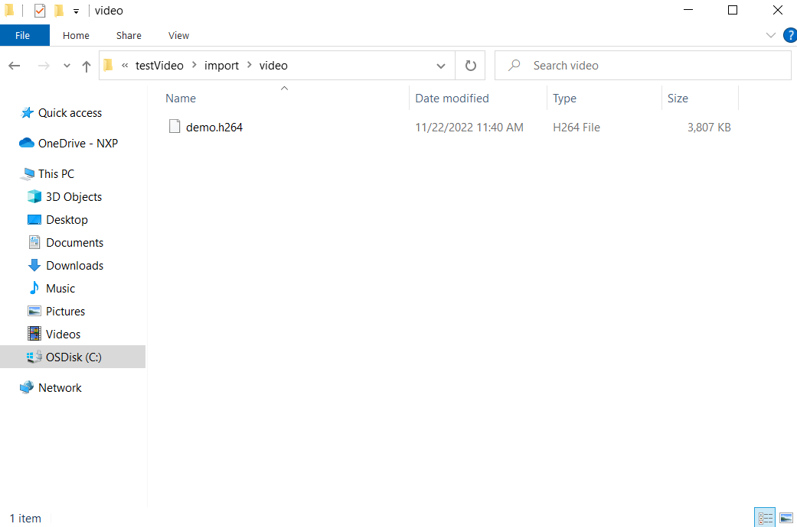

To create a project with the video player demo template, perform the following steps:
Go into the import folder and locate the demo.h264 file.Figure: Locate demo.h264 file

Replace the demo.h264 file from the SD card of the MCU device with the *.h264 file generated by yourself.
To load the code into your device, click Run > Target > MCUXpresso. After finishing, you can play this demo video on display.
Note: Because the conversion of YUV420 to rgb565 at the board end is through PXP, PXP line selection cannot be enabled in the video demo in the GUI Guider.